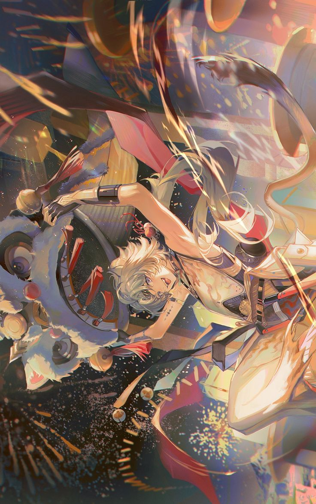
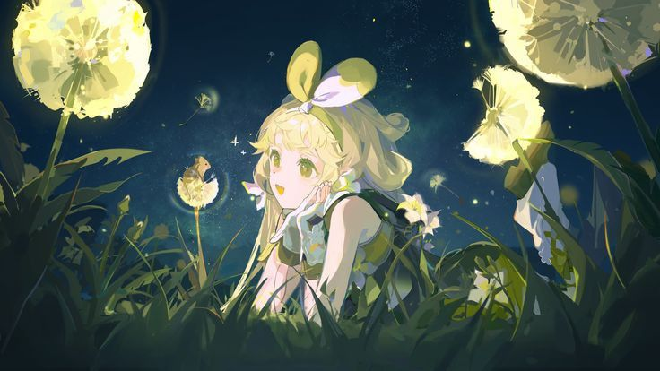
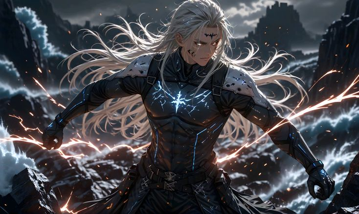
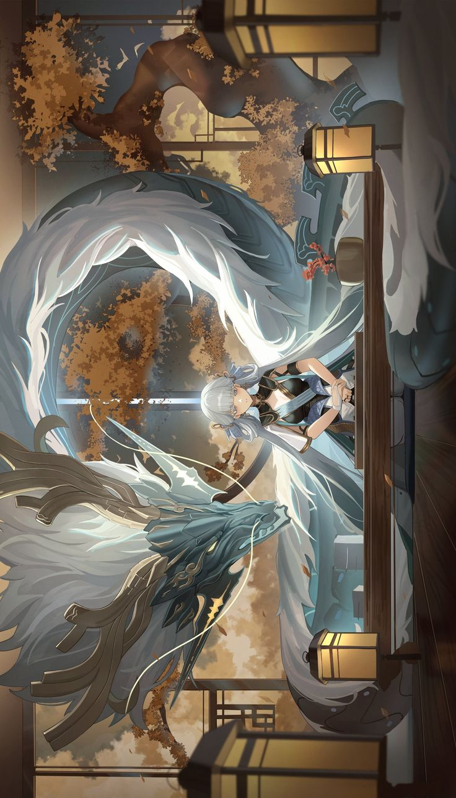
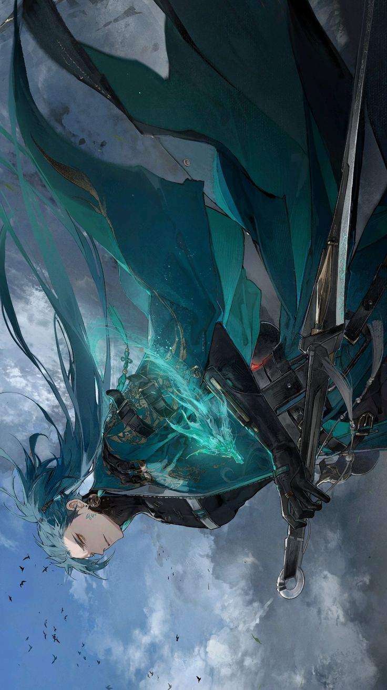

Wuthering Waves

Wuthering waves, also known as Wuwa, is a free to play fantasy game.
It is a role play game, with a very interesting storyline.
It is also an open world game, where you fight bosses and get stronger.
In the game you are a rover who was found unconcious by the NPCs and now you are trying to uncover your identity.
This is the link of the official Wuthering waves website: Official website
🌟 My favorite characters 🌟

- Lingyang
- I love his avatar design, it is so cute, and his gameplay but his fighting is not that good as his build requires alot so I stopped using him.

- Verina
- I love Verina aswell. Her character is so cute and she is also the best buffer and healer in the game. I really want her in my team.

- Calcharo
- Calcharo is my main dps and just like Lingyand he is kinda hard to use but I think I got the hang of it. I love his burst and fight style.

- Jinshi
- Jinshi is one of strong characters in the game and I luckily got early on in the game.
I love everything about her. I am still building her tho so my Jinshi is quite weak

- Jiyan
- Jiyan is one of the characters I really want. His playstyle and his voice, I love them all. I also like his interactions with Calcharo.
I haven't played Wuwa in a while because of school so, I would love to play it and see what I missed out on.
🌟Thank you for reading!🌟